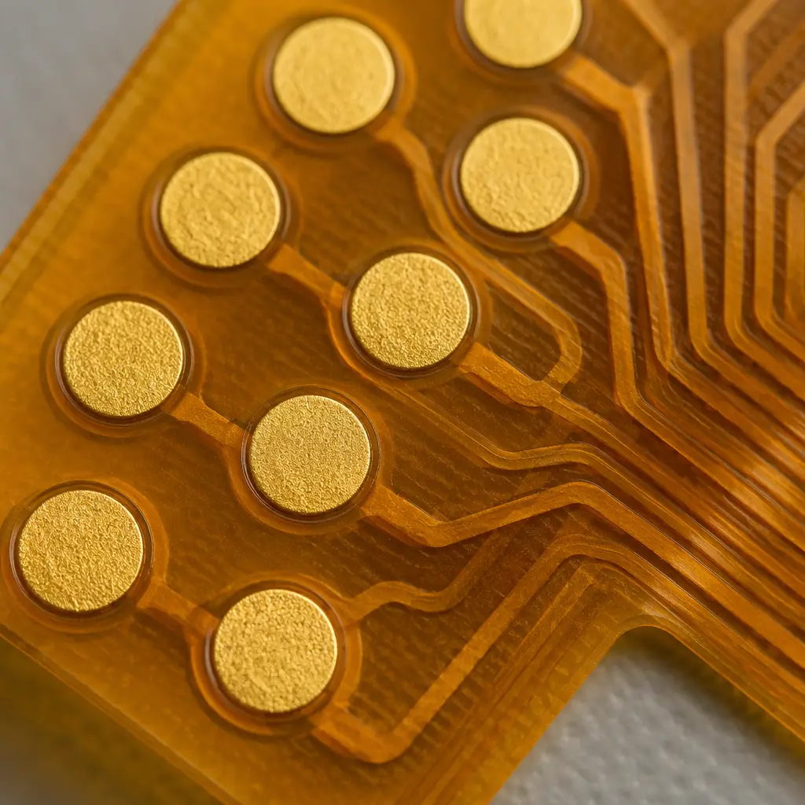
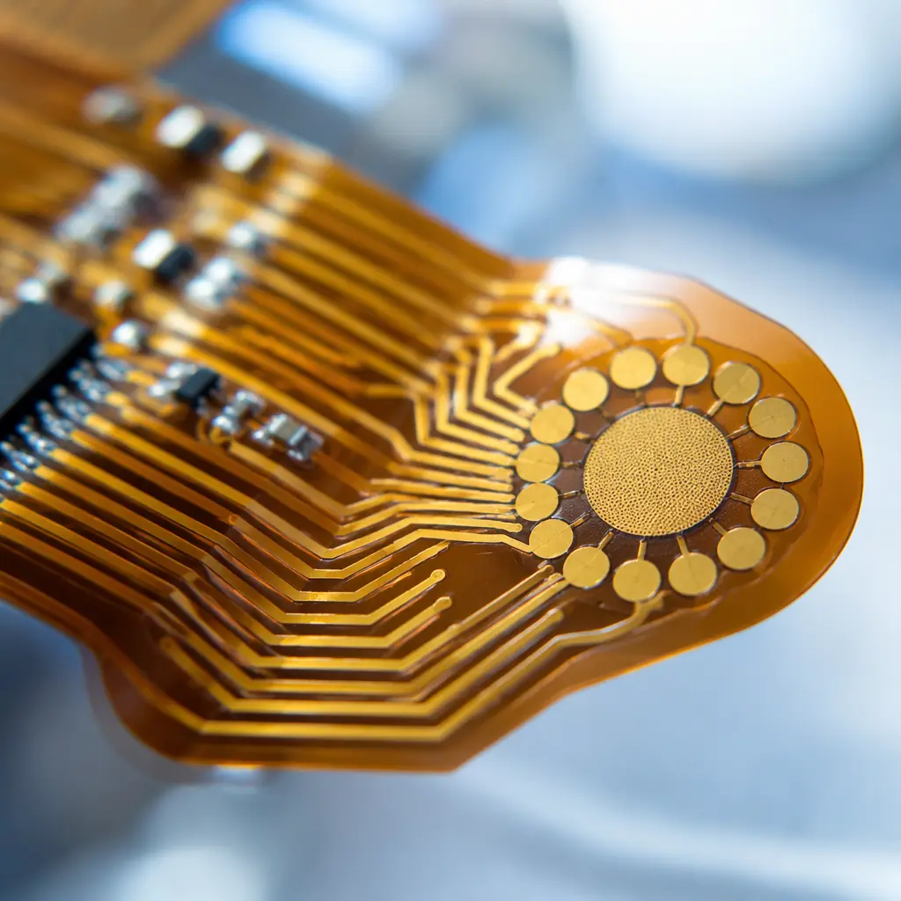

The medical wearables market is accelerating toward $195 billion by 2027, driven by continuous glucose monitors (CGM), smart ECG patches, remote patient monitoring platforms, and disposable diagnostic sensors. These devices share one common requirement: a flexible, ultra-thin PCB that conforms to the human body while delivering clinical-grade signal integrity. The PCB is not a commodity component — it is the device's structural and electrical backbone.
At Huaxing PCBA, we manufacture medical-grade flex and rigid-flex PCBs with 0.1 mm minimum thickness, 50 μm trace/space capability, and ISO 13485-compliant assembly processes. This article provides the PCB specification framework that medical device OEMs need before engaging a contract manufacturer for wearable products.

Flex vs Rigid-Flex vs Ultra-Thin Rigid — Choosing the Right Substrate
Wearable medical devices fall into three packaging categories, each demanding a different PCB construction:
| Device Type | PCB Construction | Typical Thickness | Example Application |
|---|---|---|---|
| Skin-patch sensor | Single or double-sided flex (polyimide) | 0.1 – 0.2 mm | CGM patch, sweat analyte sensor, temperature logger |
| Body-worn monitor | Rigid-flex (FR-4 rigid zones + polyimide flex) | 0.3 – 0.6 mm | Multi-lead ECG Holter, EEG headband, SpO₂ ring |
| Implantable-adjacent | 4-6 layer rigid-flex with medical-grade laminate | 0.4 – 0.8 mm | Insulin pump controller, cochlear implant processor, neurostimulator |
For skin-contact wearables, polyimide flex circuits are the default choice due to their biocompatibility, chemical resistance to sweat and cleaning agents, and ability to withstand repeated flex cycles. Our flex PCB design and manufacturing guide covers bend radius and dynamic flex life calculations in detail.
Specification Rule: For any wearable with skin contact exceeding 24 hours, specify ENIG (electroless nickel immersion gold) surface finish — it provides the best combination of biocompatibility, corrosion resistance, and consistent contact impedance for biosensor electrodes compared to OSP or immersion silver.
Signal Integrity for Biosensor Front-Ends
Medical wearables measure signals in the microvolt to millivolt range — ECG R-waves are approximately 1 mV, EEG signals can be as low as 5 μV. At these amplitudes, PCB-level noise sources including power supply ripple, digital crosstalk from Bluetooth/BLE transceivers, and even triboelectric effects from flexing circuits can corrupt the signal beyond clinical usability.
Separate Analog and Digital Ground Planes with Single-Point Star Grounding
Route the analog front-end (AFE) on its own ground plane, physically separated from the digital MCU/BLE ground plane, with a single 0 Ω bridge at the ADC reference point. This prevents digital return currents from modulating the biosensor reference. See our mixed-signal PCB design guide for full grounding strategies.
Guard Traces Around High-Impedance Inputs
ECG and EEG electrode inputs present 10-100 MΩ impedance to the AFE. Route a driven guard trace around each input line, driven by a unity-gain buffer of the input signal, to neutralize parasitic capacitance and reject 50/60 Hz mains hum. Our PCB crosstalk analysis guide covers guard trace design rules.
Shield Layer Over the Entire AFE Section
Add a solid copper pour on the layer directly above the AFE components, connected to analog ground. For flex circuits, use a separate shield film layer. This attenuates radiated EMI from the BLE antenna — typically 6-10 dB of additional noise rejection when properly implemented.

Miniaturization: Going From 4-Layer to HDI Any-Layer
A 2026-era wearable ECG patch typically packs AFE, MCU, BLE SoC, accelerometer, flash memory, power management IC, and battery charger into a PCB area under 25 × 35 mm. Achieving this requires transitioning from standard 4-layer through-hole to HDI any-layer microvia construction:
| Parameter | Standard 4-Layer | HDI Any-Layer (6L) |
|---|---|---|
| Minimum trace/space | 100 μm / 100 μm | 50 μm / 50 μm |
| Via type | Through-hole only (0.2 mm) | Stacked µvia (0.075 mm) + buried |
| BGA pitch support | 0.65 mm minimum | 0.35 mm (WLCSP compatible) |
| Component density gain | Baseline | 2.5-3× over standard 4L |
| Typical board thickness | 0.8 – 1.0 mm | 0.3 – 0.5 mm |
The transition to HDI any-layer is the single most impactful decision for wearable PCB miniaturization. It enables wafer-level chip-scale packages (WLCSP) for the AFE and BLE SoC, which typically reduce component footprint by 60-70% compared to QFN equivalents. Our HDI PCB technology guide provides detailed stackup examples and cost trade-offs at different volume tiers.
Regulatory and Biocompatibility Requirements
Medical wearables face a regulatory pathway that consumer electronics do not. The PCB material stack must comply with ISO 10993 biocompatibility standards for skin-contact devices, and the manufacturing process must be traceable under ISO 13485 quality management:
Material Declaration — Full Supply Chain Traceability
Every laminate, prepreg, solder mask, and surface finish material must have a documented Certificate of Compliance (CoC) traceable to the batch number. Our PCB certifications and compliance guide covers the documentation package required for FDA 510(k) submissions.
Ionic Cleanliness — IPC-6012 Class 3 Minimum
Residual ionic contamination from flux and plating chemistry can leach into skin tissue over extended wear. We specify <1.56 μg/cm² NaCl equivalent per ROSE testing (IPC-TM-650 2.3.25) as the cleanliness threshold for all medical wearable PCBs.
Halogen-Free Laminate for EU Medical Device Regulation (MDR)
The EU MDR 2017/745 restricts halogenated flame retardants in patient-contact devices. Specify halogen-free polyimide or FR-4 laminate — the cost premium is typically 12-18% over standard FR-4 but eliminates regulatory risk in the EU market. Our PCB laminate selection guide compares available halogen-free options.
Production Scaling: From Clinical Trial to Commercial Volume
Medical wearable PCB production follows a staged ramp-up that differs from consumer electronics. The clinical timeline drives PCB procurement decisions:
Feasibility / Clinical Trial — 50-500 Units
At this stage, process validation is more important than unit cost. We recommend our low-volume PCB assembly service with full first-article inspection (FAI) per IPC-A-600 Class 3 criteria on every batch. Documentation packages support your design history file (DHF).
Pilot Production — 1,000-5,000 Units
Establish SPC (statistical process control) on critical parameters — plated through-hole wall thickness, solder mask registration, and surface finish thickness. Our PCB supplier quality scorecard framework helps you track these KPIs across production lots.
Commercial Launch — 10,000-100,000+ Units/Year
At volume, panel utilization, PCB cost driver optimization, and automated optical inspection with AI-based defect classification become the dominant levers. We deploy dedicated production cells for medical wearable programs to maintain process consistency across years of production.
At Huaxing PCBA, our medical electronics manufacturing cell operates under ISO 13485 quality management with full lot traceability from laminate receipt through final electrical test. We support medical device OEMs from first prototype to FDA-cleared commercial production. Contact our medical electronics team to discuss your wearable PCB requirements, or read our comprehensive medical device PCB guide for broader medical electronics considerations.